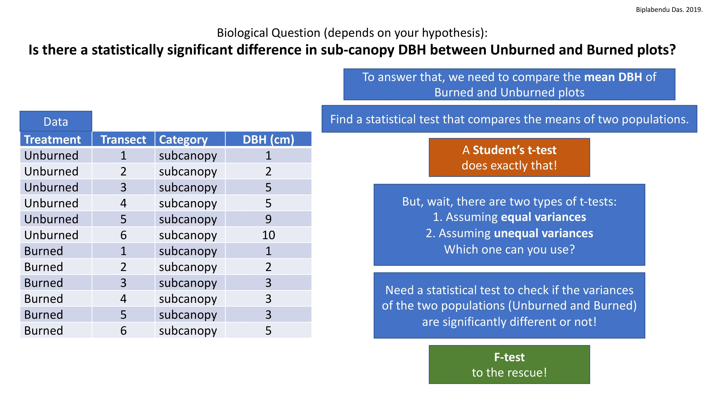
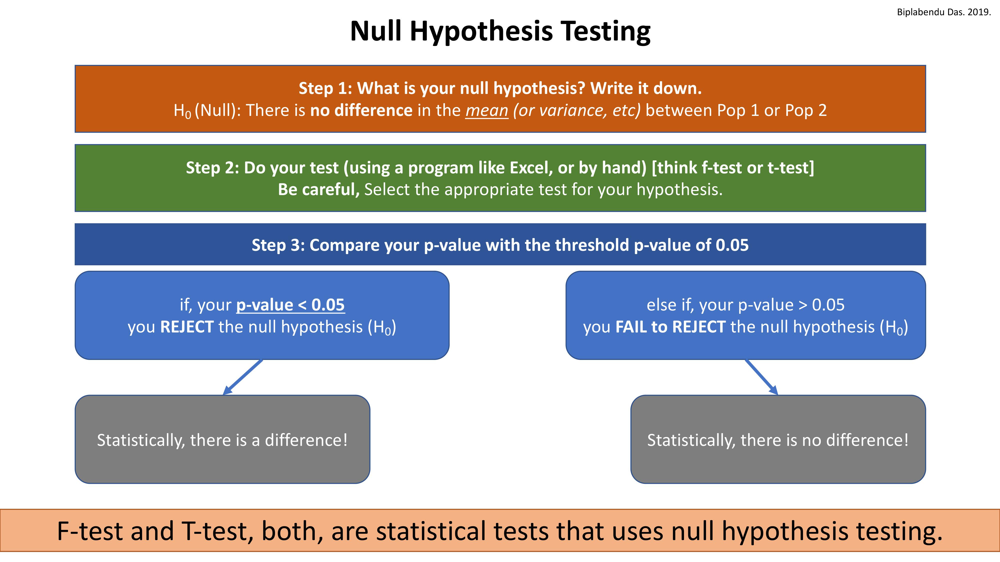
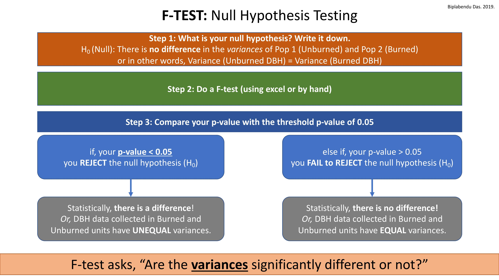
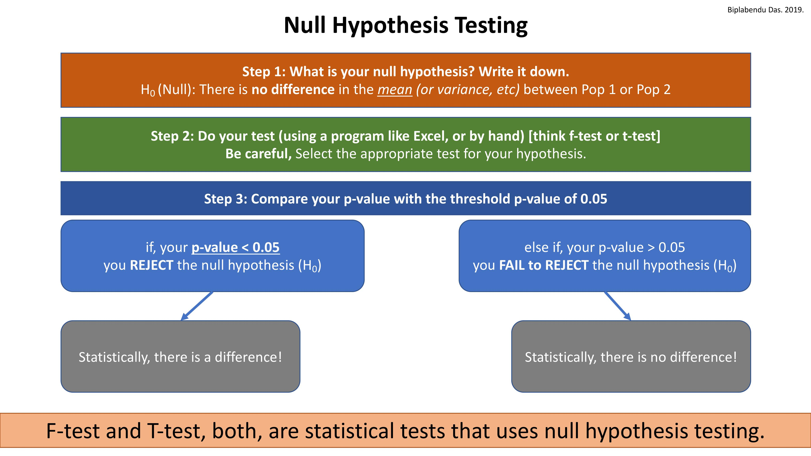
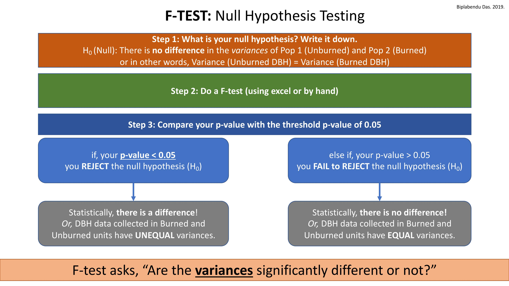
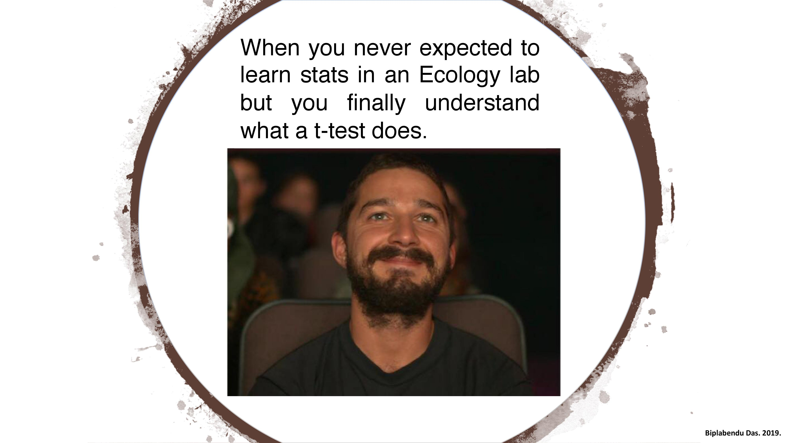

Teaching History:
- Instructor of record, Principles of Ecology, UCF-Biology (2 yrs)
- Lab instructor, General Biology II, UCF-Biology (2 yrs)
Building website using R, Markdown, and GitHub
The tutorial shows how to deploy a website, hosted on GitHub Pages for free, using R and Markdown.
The tutorial is available as a written document: link to tutorial
To make the process highly accessible, I have created a dummy website that provides a template for building a professional website with two pages: a homepage and a webpage for describing your research experience. The template can be customized by renaming and repurposing the individual pages.
Source: Workshop hosted by Billu in September, 2024.
Plotting publication-quality figures using R
This tutorial is intended to get you started with programming in R, using RStudio (Cloud) for working on a shared project (link provided below). The code in the R script will generate high-quality plots using an example dataset, and save them to your local hard disk for use.
Shared project link: https://rstudio.cloud/project/1049250
Note: This tutorial was created for students taking PCB3044L-Principles of Ecology lab at UCF.
Plotting means and standard deviations in Excel
F-test and T-test Cheat Sheet
 


# Check this space for more materials!